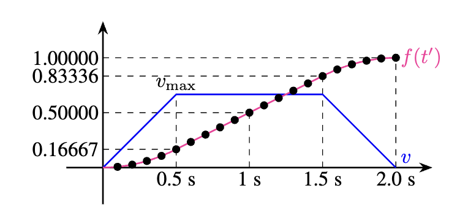

This capstone project involves programming a Franka Emika Panda robot to autonomously pick up a pen, move it to a whiteboard, draw lines and curves, and place the pen in a drop bin. The robot must successfully complete this sequence three times while adapting to different pen locations, whiteboard positions, and orientations.
The project focuses on robot kinematics, inverse kinematics (IK), trajectory generation, and collision avoidance, showcasing our approach to robot motion planning in constrained environments.
To ensure smooth acceleration and deceleration, we implemented an S-curve motion planning approach, shown alongside the standard trapezoidal trajectory profile in the diagram below.

The trapezoidal profile has instantaneous changes in acceleration at its transition points, which increases the torque demand on the motors. To resolve this, we smoothly varied the time parameter passed to the interpolation function, allowing acceleration to change gradually. This improved trajectory stability by keeping acceleration and jerk within feasible limits.